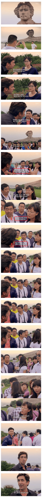

비겁하게 팩트로 공격하다니 할말이 없잖아!!

비겁하게 팩트로 공격하다니 할말이 없잖아!!
피융신들 ㅋㅋㅋㅋ
아ㅋㅋㅋ 말하면 잡혀간다고 ㅋㅋㅋㅋ
덩샤오핑을 추앙ㅎ면 몰라도 ㅋㅋ
장제스가 공산주의자였으면
마오쩌둥은 자본주의를 밀었겠지 ㅋㅋㅋ
그냥 권력이 좋았을뿐
누구보다 많은 중국인들을 착하게 만들었는데 가장 존경 받는 인물인게 아이러니
공산당에 마음에 들지 않는 발언을 하면 잡혀간다고!!
나락감지ㅋㅋㅋㅋㅋㅋㅋ


근데 실제로 중국 내부에서도 웹상에선 토론 존나 활발히하고 현 중국체제 까는 사람도 꽤 된다고 하던데..
인구가 워낙 많으니 뭐
하나하나 따져서 잡아가는 동네였으면 여기까지 개방되어 있지도 않았음
밈은 그냥 밈으로 봐야.. 결국 어느 국가든 본인들 사정은 본인들이 제일 잘 아는 법이라 X 가보면 싸움 붙었을때 인터넷에서 주워먹은 혐중드립만 치다가 탈탈 털리는 5톤대기조 형냐들 자주 보임
중국 후난성 창샤에 있는 쩌둥이 동상. 의외로 젊은애들도 저기 많이감. 진짜 이해안가는 좆같은 관광지. 변발 대머리로 해야지 새롭게 각색해놨누
듣고보니 맞는말 ㅋㅋㅋㅋㅋㅋ
ㅋㅋㅋㅋㅋㅋㅋㅋㅋㅋㅋㅋㅋㅋㅋㅋㅋㅋㅋㅋㅋㅋㅋㅋ
딴데 보는거 존나 웃기네 ㅋㅋㅋ
좀 대가리 굴러가면 그때는 공산주의가 필요했고 지금은 자본주의가 필요하다로 피해갈텐데 ㅋㅋㅋ
때로는 독재가 필요하다는 식의 발언 많이들 하잖아?
그거야 너가 일당독재공산당인 나라국민이 아니라 할수있는 이야기고 ㅋㅋㅋ
저거 설마 마우저둥이라고 만든 석상임? 얼굴사기도 작작쳐해야지 ㅅㅂ ㅋㅋㅋㅋ
파룬궁
말 잘못하면 신비해진다고!!!
마오도 중국내에서 문혁으로 재평가되던데
쟤네는 근본이 참 애매하긴함ㅋㅋ
업적 부정한적 없능데 ㅎ